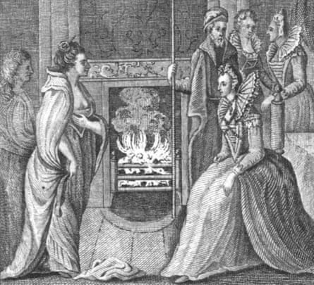
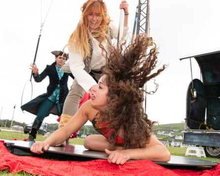

The Atlantic foamed, the wind gusted and the pirate queen swung from the rigging. She was ruler again, at least in spirit, of this corner of the west of Ireland .
Five centuries after Grace O’Malley defied convention, and the English, by leading a renegade fleet, her descendants and admirers gathered on Achill Island this weekend to re-enact and celebrate her feats.
An all-female circus of performers and acrobats depicted her life – and famous encounter with Queen Elizabeth I – in an open-air show by the shoreline where she once sailed.
“Grace is our anti-goddess. What makes her different from the other red-headed female figures of Irish history is that she wasn’t a goddess or a fairy. She was real – a powerful, real woman,” said Dea Birkett, the creative producer of the Day of Grace , which mixed circus, music and storytelling on the County Mayo island.
Saturday’s theatrical premiere was the latest sign that Ireland has rediscovered a figure who was once written out of history to the point of being deemed mythical. Now her trailblazing life is the subject of tours, books, plays, documentaries and DNA investigation.
Born around 1530, Graínne Mhaol, or Granuaile, as she is also known, was the daughter of a Gaelic chieftain who led her seafaring clan through tumultuous conflicts with rival clans and encroaching English forces. She reputedly had a fleet of 20 ships and took a shipwrecked Spanish sailor as a lover between her two marriages.
Grace’s practice of intercepting and demanding tributes from vessels infuriated Ireland’s would-be Tudor overlords, leading to clashes and the capture of Grace’s son, who was held hostage. She sailed to London and gained an audience with Queen Elizabeth, who could have executed Grace but instead freed her son and allowed them both to return home, where Grace continued to intercept ships and died, in her 70s, in 1603.
A page from Anthologia Hibernica depicting Grace O’Malley meeting Queen Elizabeth I.Photograph: Alamy
“She’s swashbuckling and she’s cheeky – the brass neck, the resilience, no wonder her story gets an amazing response,” said Deborah Newbold, who performed a one-woman show, Dauntless , overlooking Achill’s Dugort beach.
Despite a long, taboo-busting life, Irish chronicles made no mention of Grace, who became a figure of folklore, until a historian, Anne Chambers, found references in English state records and published a biography in 1979.
Now in its 11th edition, the biography has inspired artists, poets, musicians, sculptors and composers. “Grace will never let me go,” said Chambers. “She shines as an inspirational beacon to what women can achieve, like her, even in the most demanding and difficult environments.”
Grace’s story featured in a Broadway musical and in folk and punk band renditions. Interest is surging anew in the run-up to Grace’s 500th birthday in 2030.
The Mayo town of Newport unveiled a statue last year and has restored Rockfleet , a castle associated with the pirate queen. A luxury hotel named the Grace is to open in nearby Westport. Brands of whiskey and gin named after the clan chieftain are now on sale in about 30 countries. A stage play and TV documentary based on Chambers’ book are being planned and a feature film is in development.
“There’s a zeitgeist about Grace at the moment,” said Birkett. “People used to think she didn’t exist but she used to sail right past here. Her power over the English was that she knew every bit of water, every harbour.”
The circus performers defied a strong breeze – and interloping sheep – to turn the pirate queen’s story into an acrobatic show for several hundred people. “Just like a ship, a circus is at the mercy of forces you can’t control,” said Polina Shapkina, who played Grace. “This is our spin on the story – it’s about female power.” The show, partly sponsored by Mayo county council and performed by members of the production company Circus 250 , is expected to go on tour.
Performers in Circus 250’s aerial show Grace: The Story of a Pirate Queen.Photograph: Alison Laredo
The audience included two coachloads of O’Malleys from around the world – members of the O’Malley Clan Association, which held its 69th annual gathering this weekend.
Randall O’Malley, 58, from Los Angeles, recently gave a DNA sample to the association’s Finding Grace project . It aims to identify her descendants through the Y-DNA signature – which is easier to track than the female chromosome – of Grace’s immediate male forebears. “It would be a hoot to able to tell the rest of my family that we’re related,” he said.
Maurice Gleeson, the genealogist leading the project, said people named O’Flaherty and Burke may also have a genetic link via Grace’s two husbands. The clan’s current taoiseach – an elected post – is Grace O’Malley, a Dublin schoolteacher.